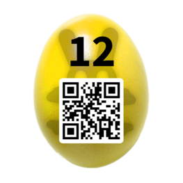

Recently Updated
Egg 12: This is just a Test
Challenge:
This is your chance to become a Certified Easter Hacker (CEH)! Complete the following little test. Passing score is 100%.
Question 1 What is the name of the popular port scanner, implemented by Fyodor?
Question 2 In the context of PKI systems, the shorthand “CRL” stands for “certificate ____ list”.
Question 3 A group of 100 people plans to use symmetric encryption for secure communication. How many keys are needed to let everybody communicate with each other?
Question 4 Which hash sizes are supported by the SHA2 family? Choose two! 192 bit 384 bit 448 bit 512 bit
Question 5 Which port number is used by Kerberos?
Solution:
The answers to the questions are:
Q1: nmap Q2: revocation Q3: 4950 ( 100+99+98+..+1, or n*(n+1)/2 ) Q4: 384 and 512 Q5: 88
But the form will not let you enter the these values, so we adjust the html:
1
2
3
4
5
6
7
8
9
10
11
12
13
14
15
16
17
18
19
20
21
22
23
24
25
26
27
28
29
30
31
32
33
34
35
36
37
38
39
40
41
42
43
44
45
46
<form method="post" action="ceh">
<article class="box post">
<header id="challenge-header"></header>
<script>addChallengeHeader()</script>
<p>
This is your chance to become a Certified Easter Hacker (CEH)! Complete the following little test. Passing score is 100%.
</p>
<p>
<b>Question 1</b><br/>
What is the name of the popular port scanner, implemented by Fyodor?<br/>
<input type="text" name="q1" autocapitalize="off" autocorrect="off" placeholder="all lowercase" onblur="this.value = 'metasploit';"></input>
</p>
<p>
<b>Question 2</b><br/>
In the context of PKI systems, the shorthand "CRL" stands for "certificate __________ list".<br/>
<input type="number" name="q2" autocapitalize="off" autocorrect="off" placeholder="all lowercase"></input>
</p>
<p>
<b>Question 3</b><br/>
A group of 100 people plans to use symmetric encryption for secure communication. How many keys are needed to let everybody communicate with each other?<br/>
<input type="text" name="q3" autocapitalize="off" autocorrect="off" placeholder="all lowercase" maxlength="3"></input>
</p>
<p>
<b>Question 4</b><br/>
Which hash sizes are supported by the SHA2 family? <b>Choose two</b>!<br/>
<input type="radio" name="q4" value="192">192 bit</input><br/>
<input type="radio" name="q4" value="384">384 bit</input><br/>
<input type="radio" name="q4" value="448">448 bit</input><br/>
<input type="radio" name="q4" value="512">512 bit</input>
</p>
<p>
<b>Question 5</b><br/>
Which port number is used by Kerberos?<br/>
<select name="q5">
<option value="0">please choose</option>
<option value="53">53</option>
<option value="139">139</option>
<option value="161">161</option>
<option value="8080">8080</option>
</select>
</p>
<p>
<button type="submit" name="success" value="false">Submit Test</button>
</p>
</article>
</form>
For question one, remove onblur="this.value = 'metasploit';" For question two, change type from number to text For question three, set maxlengthto 4 For question four, change input type to checkbox For question five, change value of one of the options to 88 and select that option For the button, change value to true
Now you can submit the correct answers and get the egg14_qrcode

Flag
kR4ZCgRneYR27YAYr8eE